Pip explains each idea in small steps
Every school year is its own adventure, with its own map. In Year 1, children tap a place, learn the idea with Pip, then have a go. There is a hint when they need one, and right answers earn feathers and stars.
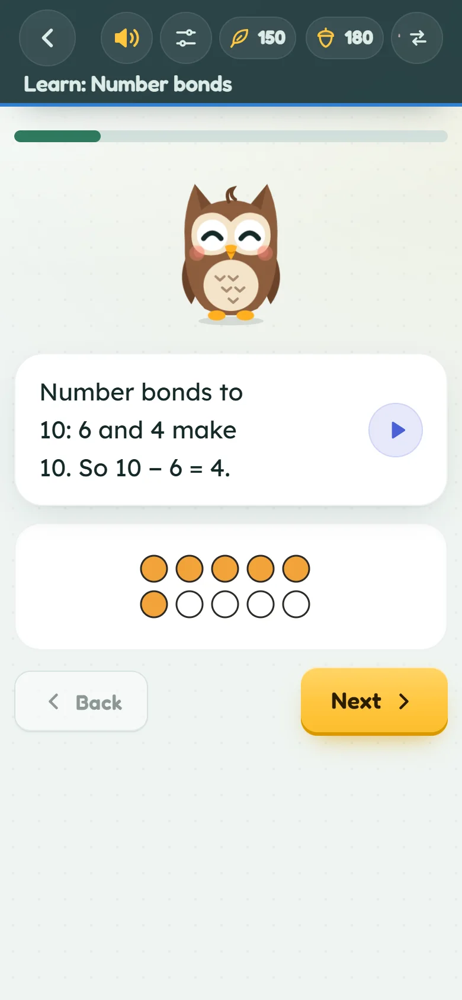
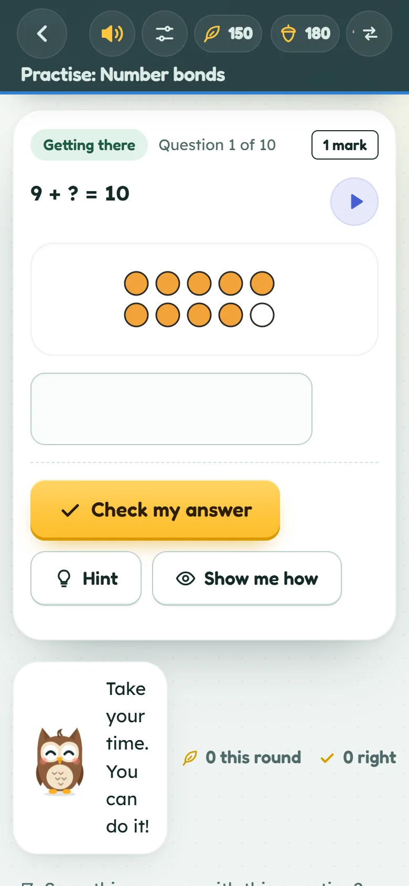
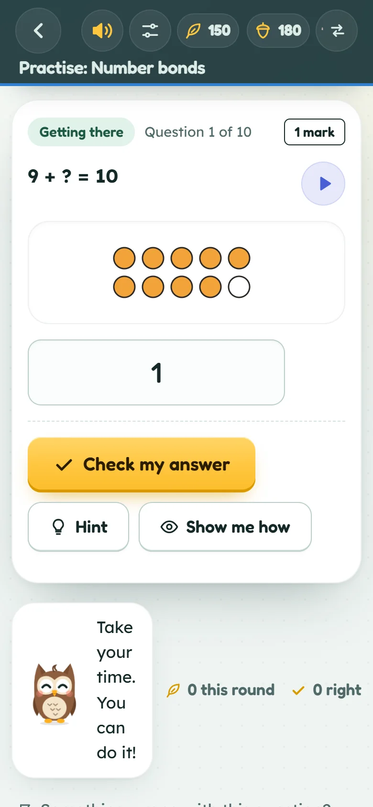
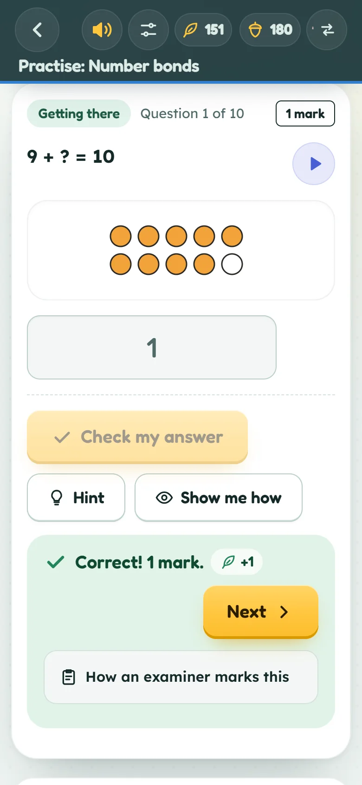
Times tables, at their own pace
In the Tables Tree, children read a table through and hear it aloud, practise it with or without the timer, and test themselves on the tables they choose, such as the 2, 5 and 10. Year 4 has a practice multiplication tables check, in the style of the real one.
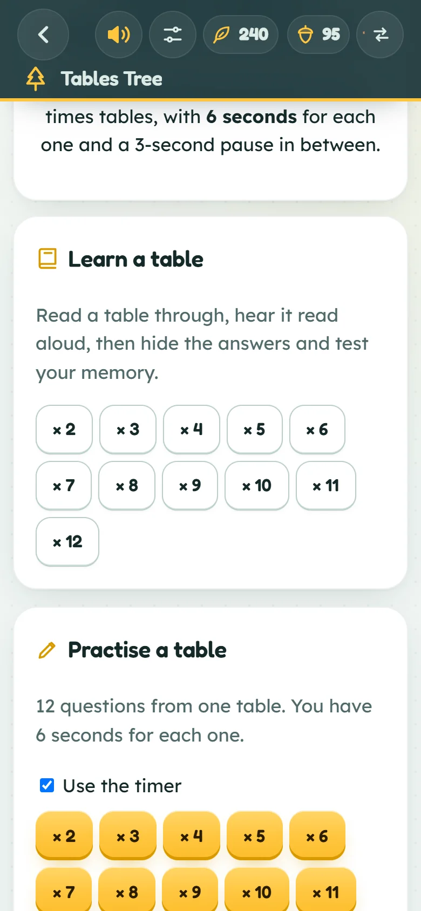
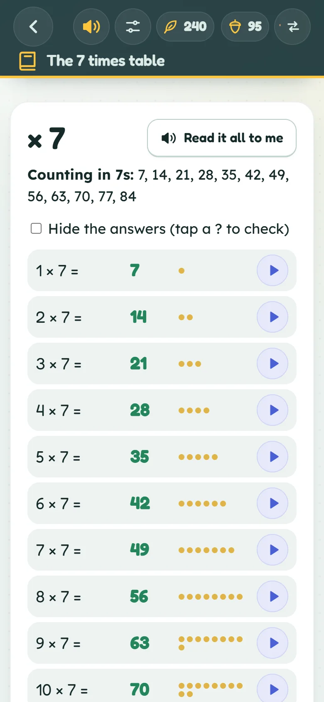
By Year 11, it is marked like a GCSE
Every GCSE topic is here, at Foundation and Higher tier. Questions carry marks, a calculator is there when one is allowed, and children can see how an examiner would mark each one. Practice papers follow your exam board’s layout, and Year 6 has papers in the style of the KS2 SATs.
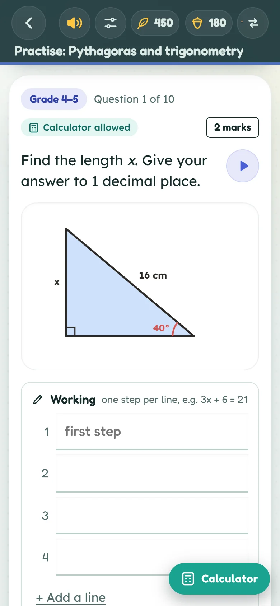
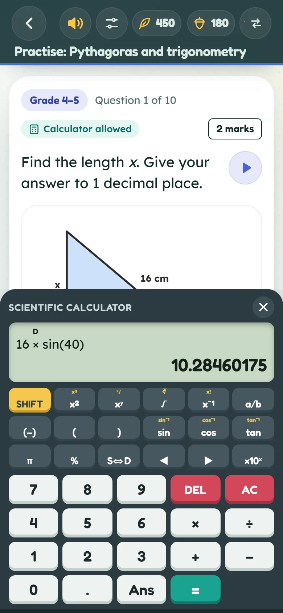
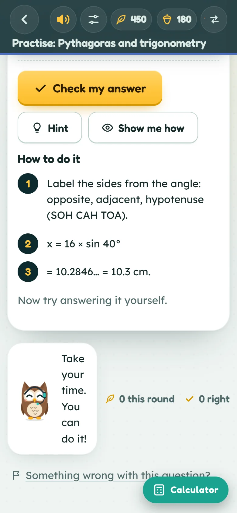
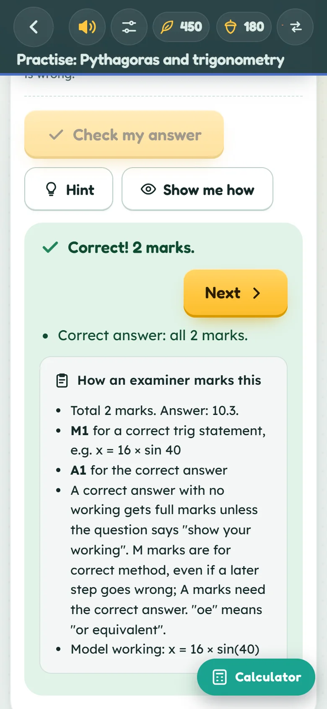
Practice earns acorns, and a finished year earns a certificate
Acorns are spent in the dressing-up chest, on outfits for each child’s own animal. Pass the year’s final practice papers and there is a certificate to print, with their top skills and stars.
Certificate shown for an example child.
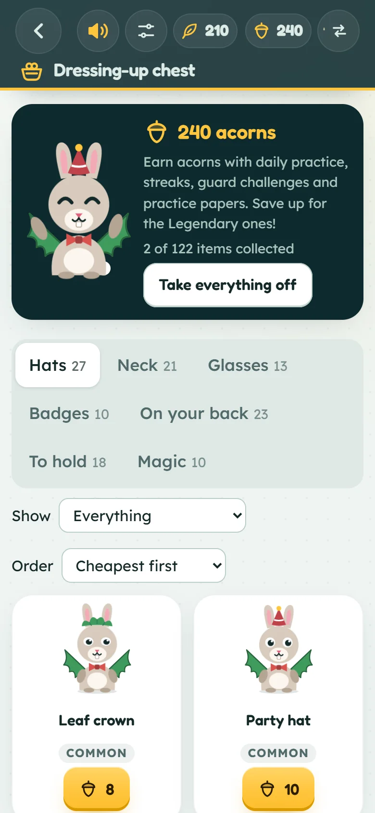
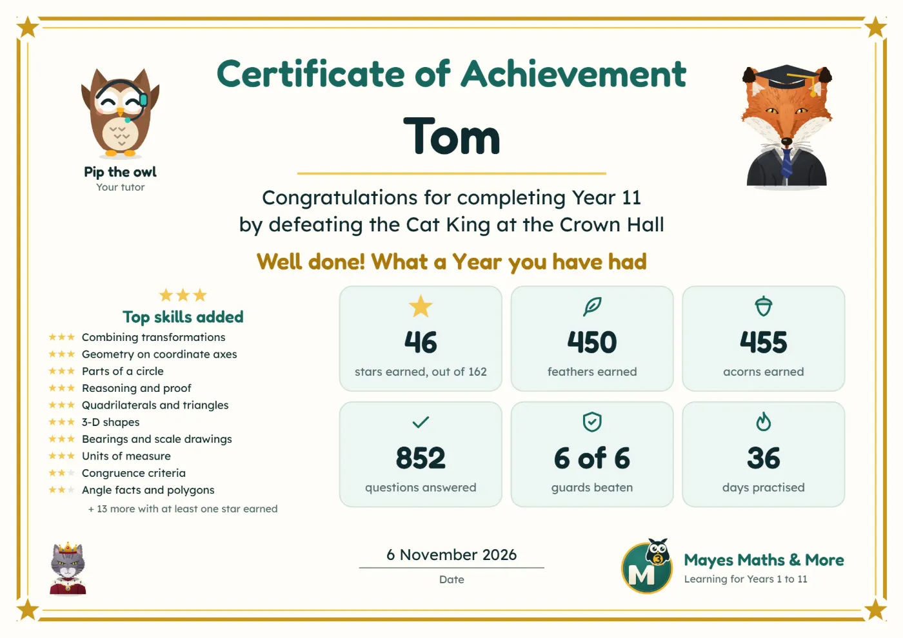
Grown-ups can see what is working
The grown-ups’ area has its own PIN. It shows how each child is improving week by week and which topics are worth more practice. You can search every topic and set one as a special task, and set play time limits for each child.
Screens shown for an example child.
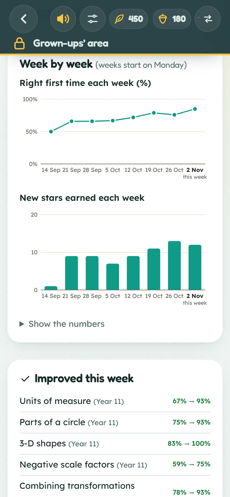
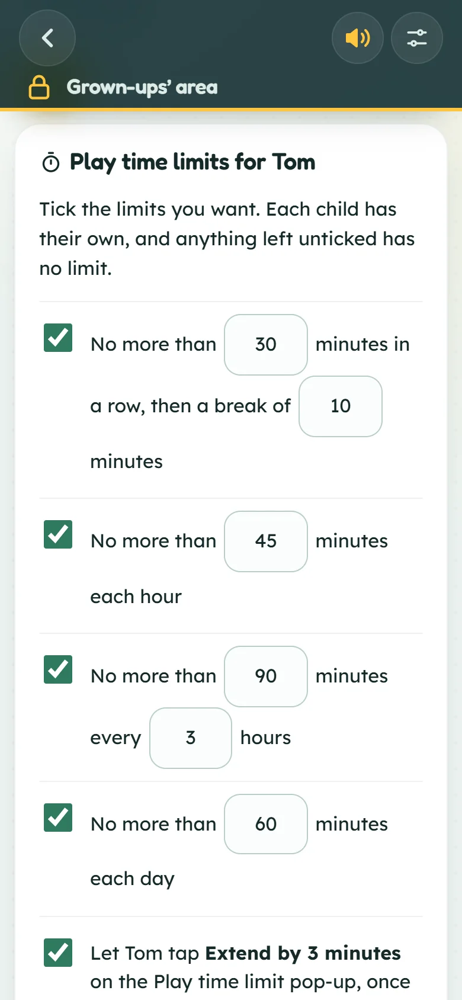
Free to download, and free thereafter
- No in-app purchases
- No adverts
- No accounts or sign-ups
- Works without the internet once installed
- Nothing about your child leaves the device
Made to help children learn, not to make money.
Every year, every topic
425 curriculum topics across 11 school years, plus 24 mental maths tricks and 22 topics of 11+ practice. Choose a year to see every topic in it.
- 1Year 15–6 · 18 topicsCounting forwards and backwards · Number sentences · Groups and sharing
- 2Year 26–7 · 34 topicsCounting in steps · Adding and subtracting problems · Times tables and odd and even
- 3Year 37–8 · 33 topicsCounting in steps; 10 and 100 more or less · Adding and subtracting in your head · The 3, 4 and 8 times tables
- 4Year 48–9 · 42 topicsCounting in 6s, 7s, 9s, 25s and 1,000s · Column addition and subtraction · Times tables to 12 × 12
- 5Year 59–10 · 47 topicsNumbers to 1,000,000 · Column methods with big numbers · Factors and multiples
- 6Year 610–11 · 49 topicsNumbers to 10,000,000 · Long multiplication · Simplifying and common denominators
- 7Year 711–12 · 37 topicsPlace value and powers of 10 · Negative numbers · Fraction calculations
- 8Year 812–13 · 23 topicsStandard form · Rearranging formulae · Straight-line graphs
- 9Year 913–14 · 20 topicsTypes of number · Factorising quadratics · Solving with graphs
- 10Year 1014–15 · 68 topicsOrdering and inequality symbols · Fractions and decimals · Algebraic notation
- 11Year 1115–16 · 54 topicsConverting units · Percentages and percentage change · Geometric terms and notation
- 11+11+ Training Camp22 topicsMaths · Non-verbal reasoning · English
- ×Times tables2 to 12Learn · Practise · Test
- ★Pip’s Trick Box24 tricksMental maths shortcuts
Questions parents ask
Is Mayes Maths & More really free?
Yes. It is free to download and free to use, with no adverts, no in-app purchases and no subscription. It was made to help children learn, not to make money.
Which ages and school years does it cover?
Every school year in England from Year 1 to Year 11 (ages 5 to 16), from counting and number bonds to GCSE Foundation and Higher tier. There is also 11+ practice in maths, non-verbal reasoning and English for Years 4 to 6. See every year.
Does it follow the National Curriculum?
Yes. Each year follows the National Curriculum for England. GCSE practice papers follow the layout of the AQA, Edexcel (Pearson), OCR and Eduqas exam boards, and questions show how an examiner would mark them.
Can it help with times tables and the Year 4 multiplication check?
Yes. The Tables Tree covers every table from 2 to 12. Children can read a table through and hear it aloud, practise with or without a timer, and test themselves on the tables they choose. Year 4 has a practice check in the style of the Multiplication Tables Check: 25 questions, 6 seconds each. See times tables practice.
Does it cover the KS2 SATs and GCSE?
Yes. Year 6 has three practice papers in the style of the KS2 maths SATs, and Years 10 and 11 have GCSE practice papers in the layout of AQA, Edexcel, OCR and Eduqas, at Foundation and Higher tier. They are practice papers, not official ones. See KS2 SATs and GCSE maths.
How does it help my child learn?
Pip the owl explains each idea in small steps, then children practise with hints and a step-by-step "Show me how" when they are stuck. Questions get harder as they improve, and a grown-ups’ area shows which topics are improving and which need more practice.
How does it keep screen time healthy?
Practice comes in short rounds of 10 questions, and rewards come from right answers, not time spent. Pip suggests a break after 15 minutes in a row, acorns for outfits are capped at 50 a day, every new child starts with a 30-minute daily limit, and grown-ups can set their own play time limits. There are no leaderboards and no competing with classmates.
Can I set my child a particular topic?
Yes. In the grown-ups’ area you can search every topic in every year, including the 11+ and the mental maths tricks, and set one as a special task with a short note. Your child sees it as a special challenge on their map.
Is it suitable for home education?
Yes. It covers all the statutory maths in the National Curriculum for England from Year 1 to Year 11, with a lesson for every topic, practice papers for every year and progress tracking, so it works well alongside home education. It is free, with nothing to sign up for.
Is my child’s data safe?
Yes. There are no accounts or sign-ups, and nothing about your child leaves the device: progress is saved only on the phone, tablet or computer they use. There is no tracking and no advertising.
Does it work without the internet?
Yes. Open it once while online, or install it on the device, and it then works offline. It runs in a web browser, so it works on iPhone, iPad, Android, Chromebook, Windows and Mac without an app store.
Who made Mayes Maths & More?
It was made by Neil Mayes, a parent in England, for families and schools. You can email hello@mayesmathsandmore.com with feedback, questions or ideas.